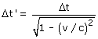

Si los dos sucesos ocurren en el mismo lugar el intervalo de tiempo entre ellos es propio para el primer observador. El intervalo de tiempo para el segundo observador será:  Si los dos sucesos ocurren al mismo tiempo para el primer observador Δt = 0 De acuerdo con la formulita Δt' = 0. Los sucesos también serán simultáneos para el segundo observador |